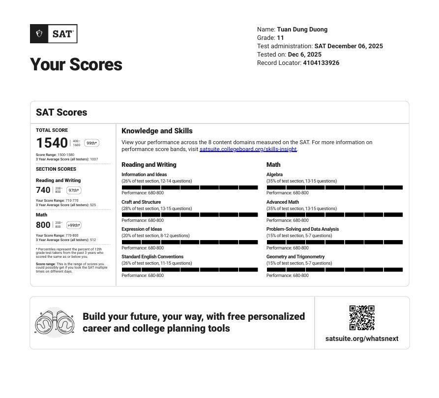
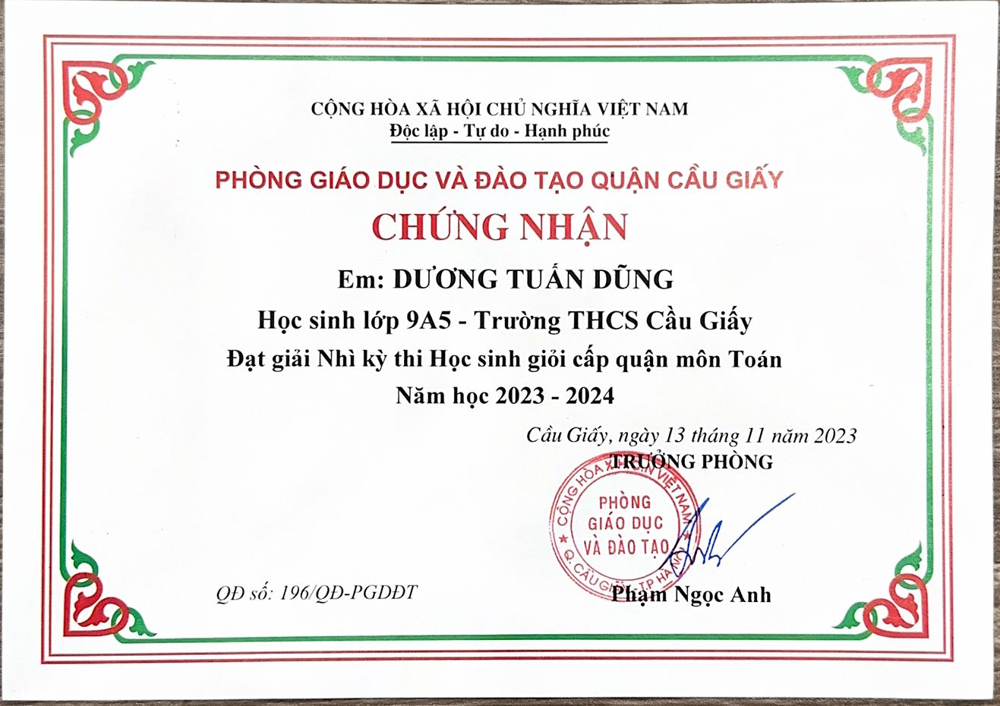
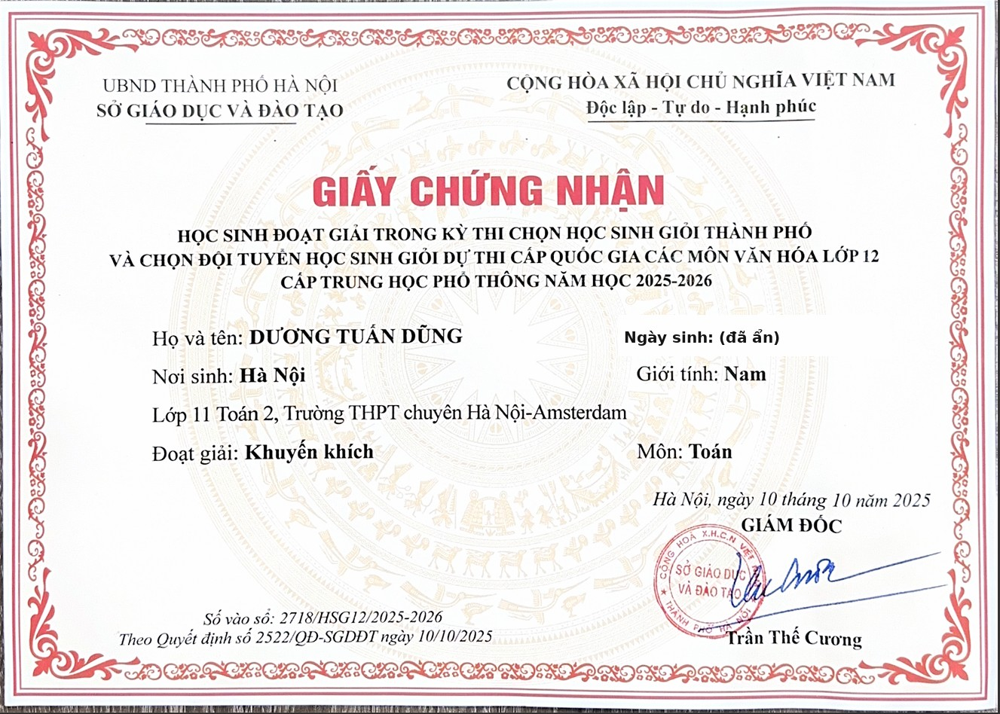
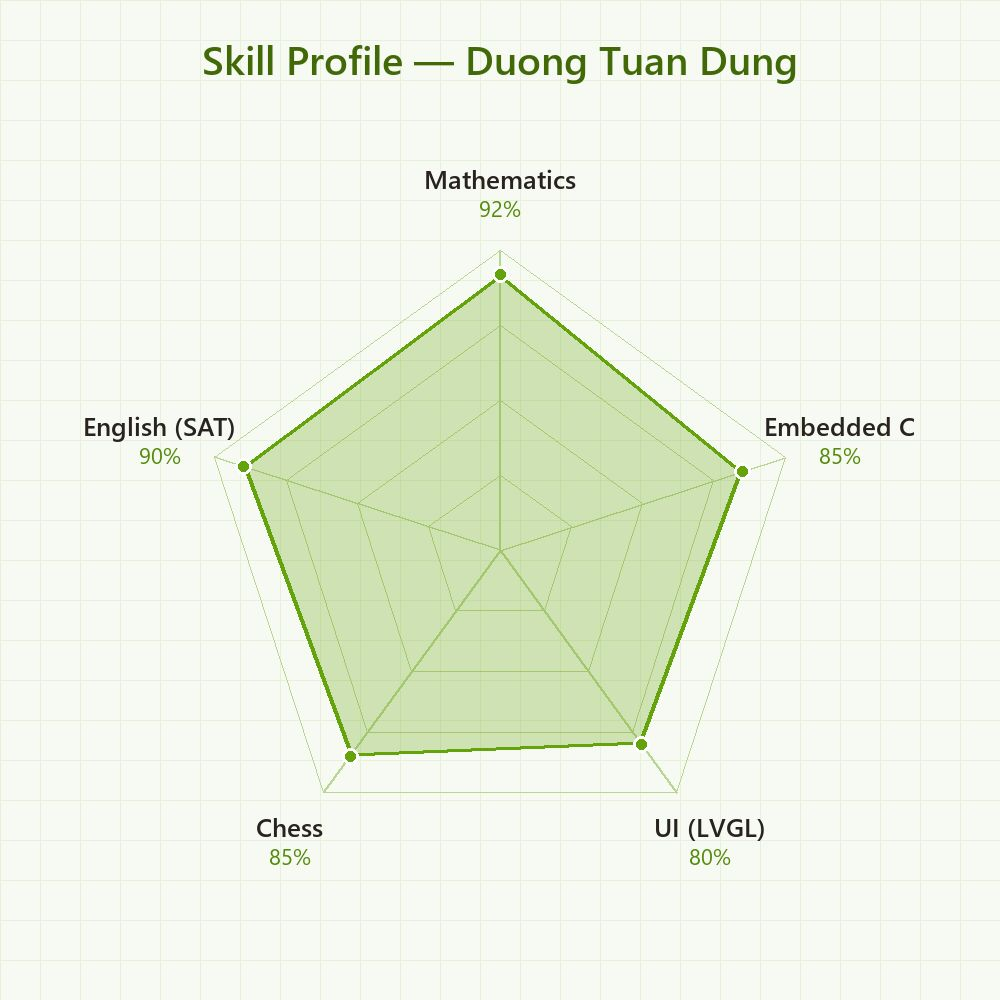
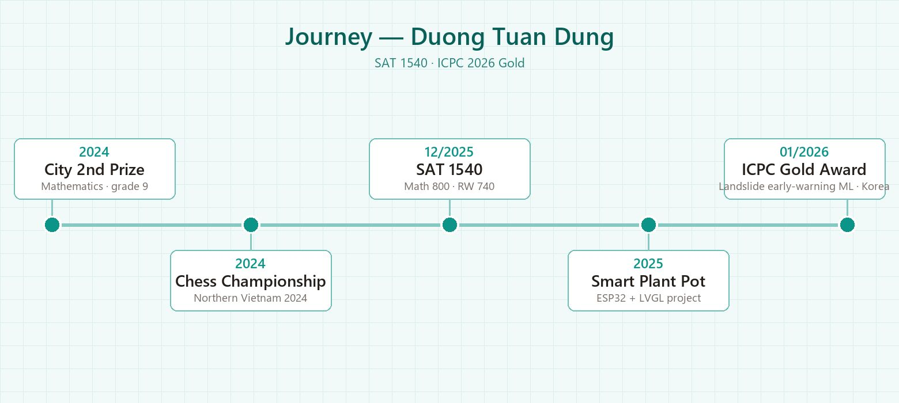

Giới thiệu
Mình là Dương Tuấn Dũng, học sinh lớp 11 trường THPT chuyên Hà Nội – Amsterdam. Mình mạnh về Toán — giải Nhì Học sinh giỏi Thành phố Hà Nội môn Toán lớp 9 và SAT 1540/1600 với điểm Toán tuyệt đối 800. Năm 2026, đội của mình đạt Gold Award tại ICPC (Hàn Quốc) với hệ thống cảnh báo sớm sạt lở đất bằng Machine Learning. Mình cũng tự chế tạo “Chậu cây thông minh” trên ESP32 với màn hình TFT và giao diện LVGL, làm Phó ban CLB STEM, chơi cờ vua thi đấu và tham gia nhiều hoạt động thiện nguyện.
“Chăm một chậu cây cũng như giải một bài toán — cần quan sát, kiên nhẫn và đúng ngưỡng.”
Chứng chỉ chuẩn hóa
SAT 1540/1600
Reading & Writing 740 · Math 800 (điểm tuyệt đối) · Kỳ thi 06/12/2025 (lớp 11)

Nghiên cứu khoa học
Applications of AI and IoT to Develop Intelligent Car Parking Systems in Hanoi, Vietnam
Bài báo đề xuất giải pháp IoT và AI cho bãi đỗ xe thông minh tại Hà Nội: cảm biến siêu âm và địa từ phát hiện chỗ trống, truyền dữ liệu thời gian thực về máy chủ trung tâm; thị giác máy tính (OpenCV) nhận diện biển số và giám sát; RFID tự động hóa việc ra/vào; ứng dụng di động cho phép tài xế đặt chỗ và dẫn đường.
6 đồng tác giả: Lam An Bình, Lê Bá Đức, Nguyễn Đỗ Anh Dũng, Dương Tuấn Dũng, Nguyễn Anh Kiệt, Vũ Xuân Mạnh — mình là đồng tác giả thứ 4/6, bài viết dạng tổng quan giải pháp, không phải nghiên cứu thực nghiệm riêng.
Thành tích & Giải thưởng
Gold Award – International Creative Papers Conference & Olympic (ICPC 2026), Hàn Quốc

Giải Nhì kỳ thi chọn HSG Thành phố các môn văn hóa lớp 9 – môn Toán (2023–2024)

Giải Nhì kỳ thi HSG cấp Quận môn Toán

Danh hiệu Học sinh Xuất sắc – năm học 2024–2025 (lớp 10 Toán 2)

Huy chương Đồng đồng đội – Cờ nhanh mở rộng, Giải Vô địch Cờ vua miền Bắc lần VIII 2024

Giải Khuyến khích – Kỳ thi chọn HSG Thành phố & đội tuyển HSG Quốc gia các môn văn hóa lớp 12, môn Toán (dự thi từ lớp 11)

Hoạt động ngoại khóa & Dự án
Sản phẩm cá nhân: Chậu cây thông minh (ESP32 + TFT/LVGL)
Thiết kế và chế tạo chậu cây thông minh theo dõi độ ẩm đất liên tục, hiển thị giao diện đồ họa trên màn TFT và cảnh báo khi đất quá khô hoặc quá ướt — giúp người mới chăm cây không cần kinh nghiệm nông nghiệp.
- Vi điều khiển ESP32 đọc cảm biến độ ẩm đất điện dung qua ADC 12-bit, hiệu chuẩn ra phần trăm độ ẩm.
- Màn hình TFT 2.4 inch với giao diện đồ họa xây dựng bằng thư viện LVGL: giá trị số, đơn vị %, trạng thái cây.
- Ngưỡng an toàn cấu hình được theo loại cây: quá khô < 20–30% (cần tưới), ổn định 40–70%, quá ướt > 80–90% (nguy cơ úng rễ).
- Hướng mở rộng: tưới tự động, kết nối WiFi/ứng dụng di động và lưu lịch sử dữ liệu.

Quá trình thực hiện


{kind=link}
{kind=link}
{kind=link}
{kind=link}
{kind=link}
{kind=link}
{kind=link}
{kind=link}
{kind=link}
Phó Trưởng ban Tổ chức chương trình “STEM Inspiration and Exchange”
Thành viên CLB AzureAms Programming (khối chuyên Toán, THPT chuyên Hà Nội – Amsterdam). Giữ vai trò Phó Trưởng ban tổ chức chương trình giao lưu, truyền cảm hứng STEM tại Trường PT Dân tộc Nội trú THPT Hòa Bình, do CLB AzureAms Programming phối hợp CLB Hanoi Ams Mathematics Lovers thực hiện.

Chuỗi hoạt động thiện nguyện
Quà tặng bệnh nhân phong – Bệnh viện Phong–Da liễu Trung ương Quỳnh Lập, Nghệ An (04/06/2025) · Thắp nến tri ân tại khu điều dưỡng thương binh TTK Nghệ An (27/07/2025) · Nhà hảo tâm chiến dịch “Mùa Đông Ấm 2025” tại xã Lao Chải, Tuyên Quang, phối hợp Đoàn Trường ĐH Y Dược – ĐHQGHN (26/01/2026) · Trung thu “Yêu thương kết nối trái tim” (2023–24).


Kỹ năng
{kind=link}

Sở thích & Quan tâm
Định hướng tương lai
Mình hướng tới ngành Khoa học Máy tính / Toán ứng dụng. Mục tiêu gần là mở rộng chậu cây thông minh với tính năng tưới tự động và kết nối WiFi, đồng thời phát triển tiếp hệ thống cảnh báo sạt lở bằng Machine Learning đã đạt giải tại ICPC 2026.
Hành trình
Giải Nhì kỳ thi HSG cấp Quận (11/2023) và HSG Thành phố Hà Nội (03/2024) môn Toán lớp 9, THCS Cầu Giấy; Huy chương Đồng đồng đội – Cờ nhanh mở rộng, Giải Vô địch Cờ vua miền Bắc lần VIII (11/2024, Bắc Giang).
Danh hiệu Học sinh Xuất sắc (05/2025); là Phó Trưởng ban tổ chức chương trình “STEM Inspiration and Exchange” tại Trường PT Dân tộc Nội trú THPT Hòa Bình; hoàn thành sản phẩm cá nhân “Chậu cây thông minh” trên ESP32; công bố bài báo đồng tác giả trên IJMSM (05/2026, đồng tác giả thứ 4/6); Giải Khuyến khích HSG Thành phố môn Toán lớp 11 (10/2025); SAT 1540/1600 với điểm Toán tuyệt đối 800 (12/2025); chuỗi thiện nguyện: quà tặng bệnh nhân phong, thắp nến tri ân, Mùa Đông Ấm 2025.
Gold Award tại ICPC 2026 (Hàn Quốc) với dự án nhóm “Landslide Early Warning System Using Machine Learning”.
{kind=link}
